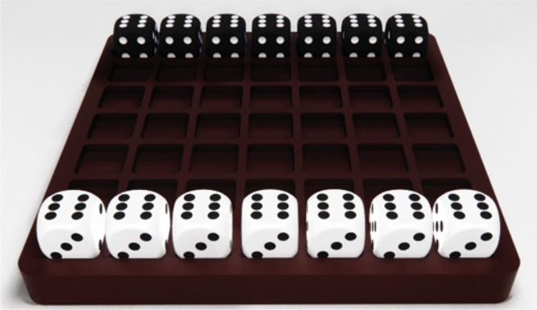
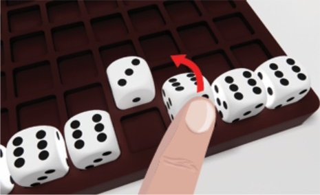
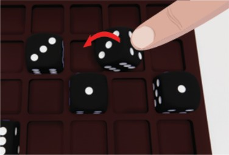
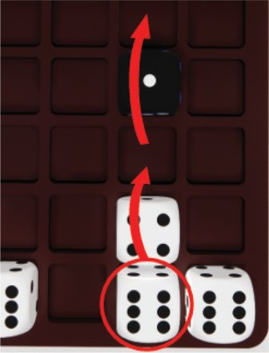
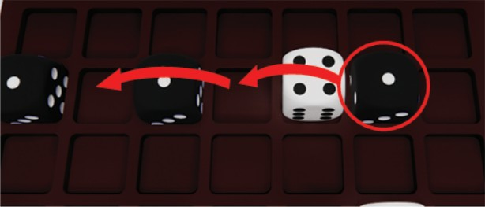
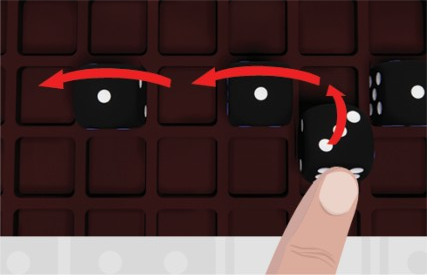
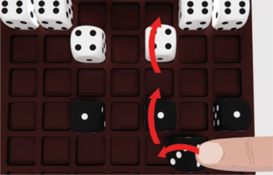
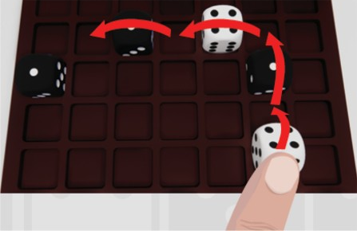
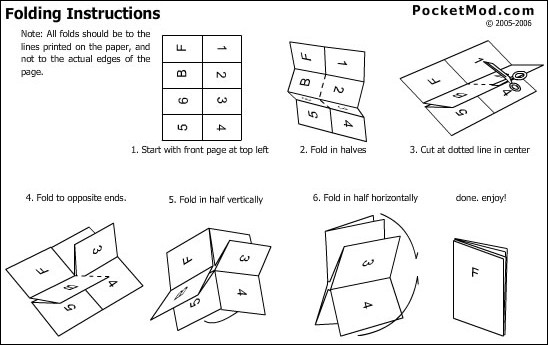

1. 将 7×7 棋盘平放在两名玩家之间，每位玩家正对着棋盘的一侧。
2. 每位玩家取己方颜色的 7 颗骰子，整齐摆放在距离自己最近的一整行中。这一行即为该玩家的“底线”（Base Row）。
3. 初始朝向要求：所有 7 颗骰子在摆放时，顶面必须朝上显示点数 6，同时朝向对面（对手）的一面必须显示点数 3（白方朝向黑方为 3，黑方朝向白方为 3，两军对垒，双方 3 互相对视，见下方图 1）。

图 1：初始对局布局。白方底线在近端（顶面朝上为 6，朝向对面为 3）；黑方底线在远端（顶面朝上同样为 6，朝向对面为 3）。抽签或协商决定由哪位玩家先手行动。玩家轮流进行回合，在成功完成以下三种走法之一后，回合结束并轮到对手行动：
一颗骰子可以在棋盘上向正前方（朝对手方向）或向侧面（左或右）翻滚 1 格。
规则要点：无论向前、向左或向右移动，均为将骰子沿对应边缘向相邻空格翻滚 90 度（严禁后退或斜向移动）。向左或向右移动同样是真实的 3D 翻滚动作，会将侧面的点数翻转为顶面。在游戏中，可悬浮鼠标查看各方向翻滚点数预判，并可通过右侧展开的“对局记录”实时追踪每步翻滚与点数流转。

图 2A：手指将白色骰子向前翻滚 1 格，顶面点数发生改变。
图 2B：手指将黑色骰子向左侧翻滚 1 格，顶面点数发生改变。在没有预先翻滚骰子的情况下，一颗骰子可以向前或向侧面跳过其他骰子（无论属于己方还是对手）：

图 3A：红圈中的白色骰子向前跳过己方白骰，落入空格后继续向前跳过黑骰。
图 3B：红圈中的黑色骰子向左跳过白骰，落入空格后再次向左跳过另一黑骰。单次合法的翻滚 1 格之后，可以紧接着执行任意次数的合法跳跃！
规则要点：先翻滚 1 格（骰子顶面点数随之改变），随后该骰子可以从新位置出发，向前或向侧面连续跳过其他骰子（跳跃期间顶面点数保持翻滚后的新数值不变）。

图 4A：黑色骰子向前翻滚 1 格，随后向左连续跳过两颗棋子。
图 4B：黑色骰子向左侧翻滚 1 格，随后向前连续跳跃进击。
图 4C：白色骰子向前翻滚 1 格，紧接着向前跳过黑骰，再转向左侧连续跳跃！为了避免误解与争议，以下行为被严格禁止：
终局条件：一旦有一位玩家将其骰子完全占满对手的底线（即该玩家的全部 7 颗骰子均成功抵达对手最初摆子的整行底线），游戏立即宣告结束。
胜负计算：将每位玩家位于对手底线的所有骰子顶面朝上的点数相加，总和最高者赢得整场游戏！
战术提示：虽然率先将 7 颗骰子全部送入对方底线能强制触发终局，但最终胜利取决于底线骰子顶面点数的总和！因此在推进过程中，如何通过精确翻滚获得更高的顶面点数，是制胜的核心战术。
【例外情况分析】在基础对决模式中，由于没有吃子机制且棋子不可重叠，若某位玩家为了阻止对手达成“完全占满底线”，故意一直保留 1 颗或多颗骰子停留在自己的起始区域（己方底线）始终不动，会导致对手无论如何也无法占满该行的 7 个格子，从而造成游戏死锁或消极防守。
【补充规则（例外处理机制）】为彻底杜绝消极防守，引入以下底线填满终局与惩罚机制：
如果你想要体验节奏更快、充满吃子与淘汰刺激感的玩法，可以尝试 Dittle Clash！在这一变体中，你只需要将任意 1 颗骰子送达对方底线即可获胜；但必须时刻警惕——因为当骰子发生“碰撞/冲突”时，它们会被淘汰出局！
本变体遵循 Dittle 基础规则，但包含以下关键区别：
★ 变体获胜条件（Winning —— 仅需 1 子达阵即可获胜）：
是的！与基础模式截然不同：在吃子模式（Dittle Clash）中，完全不需要所有骰子都到达底线，更不需要计分比拼。
★ 只要有任意 1 颗骰子成功抵达对手的底线（对方区域最内行），游戏立即宣告结束，该骰子的拥有者直接赢得整场比赛的最终胜利！
战术说明：吃子模式属于高烈度的“刺杀速攻”机制。在吃子模式下，无需担心对手在自己底线消极死守不动，因为移动骰子可以直接贴近对手正交相邻的防守骰子，利用点数优势或合围将其直接“吃子消灭”；同时只要撕开防守缺口，哪怕仅有 1 颗骰子突破进对方底线，即可一击制胜！
本规则原本被排版为可打印在一张标准 Letter（或 A4）单面纸上，并通过经典的 PocketMod 8页折纸法折叠成一本小巧的口袋微型规则书。
折叠技巧提示：在原版打印件中并没有印刷裁切线或虚线，这是因为按照下方步骤 2 先完成正反折叠压痕，再将纸张展开后沿长边对折，可以最精准地找到中心剪切线。稍加练习，您就能折出一本装帧工整的掌上规则书！

图 5：PocketMod 8合1折纸法 6 步图解（PocketMod.com © 2005-2006）。